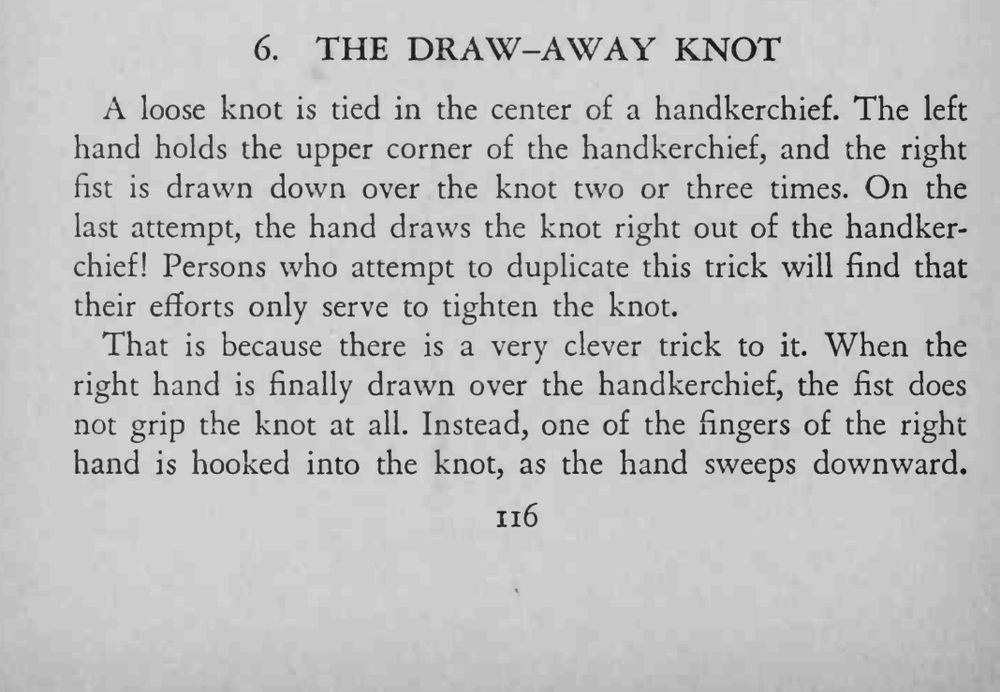
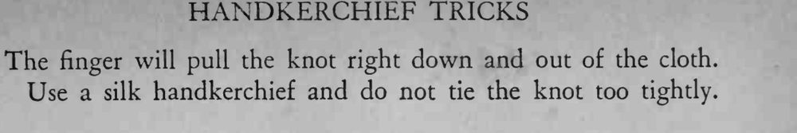

手帕中央打了一个松松的结，魔术师右手握拳从上面往下撸两三次，最后一次竟把结整个从手帕里抽了出来。
必须用丝质手帕，结不能打太紧，否则拉不出来。


A loose knot is tied in the center of a handkerchief. The left hand holds the upper corner of the handkerchief, and the right fist is drawn down over the knot two or three times. On the last attempt, the hand draws the knot right out of the handkerchief! Persons who attempt to duplicate this trick will find that their efforts only serve to tighten the knot. That is because there is a very clever trick to it. When the right hand is finally drawn over the handkerchief, the fist does not grip the knot at all. Instead, one of the fingers of the right hand is hooked into the knot, as the hand sweeps downward. The finger will pull the knot right down and out of the cloth. Use a silk handkerchief and do not tie the knot too tightly.